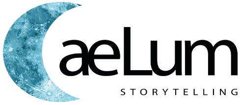
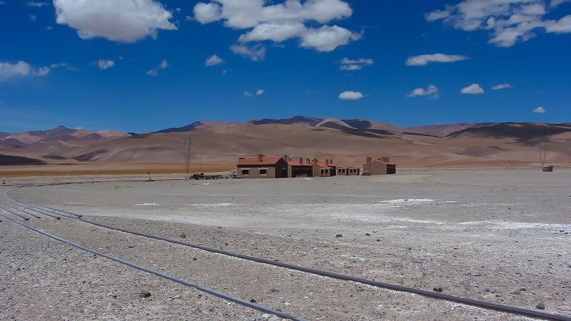
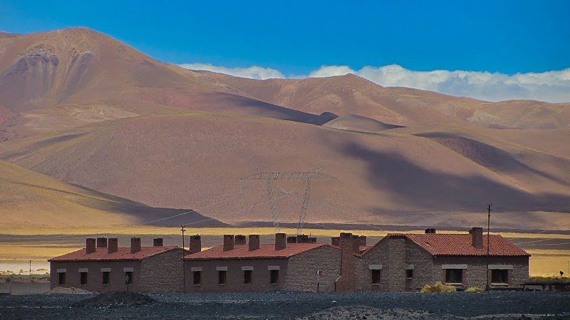
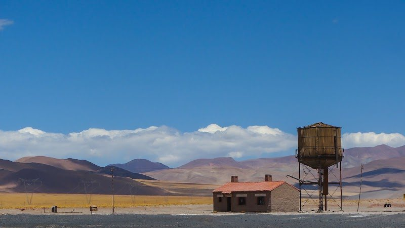

Filmmaking
Producciones audiovisuales de distintos formatos y géneros, adaptadas a las necesidades y objetivos de cada cliente.
- Documentales
- Institucionales
- Eventos
- Redes sociales

Contamos historias reales. Más de diez años en relatos documentales: divulgación científica, campañas de investigación, empresas e instituciones.
Cada obra se hace a la medida de su pantalla, su público y su presupuesto.



Producciones audiovisuales de distintos formatos y géneros, adaptadas a las necesidades y objetivos de cada cliente.
Experiencias inmersivas que permiten recorrer lugares y situaciones desde una perspectiva única.
Caelum usa una herramienta propia que conecta sus cuentas de Google (correo, archivos y agenda) con un asistente de inteligencia artificial que trabaja en una computadora del estudio. Es de uso interno y no está abierta al público.